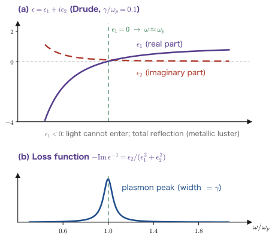
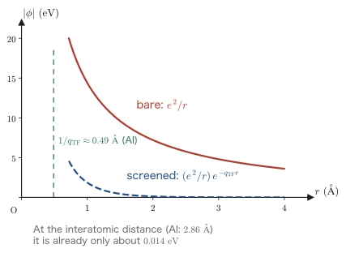

Chapter 9The Density Response Function and the Dielectric Function
In Part III we completed the general theory of linear response for quantum systems. The response can be written with the Kubo formula (Chapter 7), and its analytic properties are fully described by the Lehmann representation (Chapter 8). However, the general theory as it stands cannot compute anything. Only when we replace the abstract $\hat{A}$ and $\hat{B}$ by concrete operators do numbers emerge that can be compared with experiment.
In Part IV, which begins with this chapter, we treat the electron gas (conduction electrons in a metal) as a concrete example. How we kick is the potential created by an external charge, the reply is the change in the electron density, and the response function is called the density response function $\chi_{\rho\rho}(\qq,\omega)$. Once this is known, almost everything follows—the optical properties of a metal, the electron energy-loss spectrum, the screening length, the plasma frequency.
However, the electron gas has a new feature: the electrons push against one another through the Coulomb force. When we bring in a charge from outside, the electrons are pushed away; the displaced electrons, as an imbalance of charge, create a new electric field, and this field in turn pushes the electrons away yet again. Without cutting this chain off, summing it to infinite order and solving it self-consistently is the heart of this chapter, and the answer is the dielectric function $\epsilon(\qq,\omega)=1-v(q)\chi^0(\qq,\omega)$, where $v(q)=4\pi e^2/q^2$. We build up this one line without skipping a single intermediate step. In Chapter 10 we compute $\chi^0$ (the Lindhard function), in Chapter 11 we find the plasmon as a zero of the dielectric function, and in Chapter 12 we see that $-\mathrm{Im}\,\epsilon^{-1}$ can be measured with an electron beam. This chapter is the blueprint for the whole of Part IV.
- The second-quantized representation of the density operator $\hat\rho(\xx)=\hat\psi^\dagger(\xx)\hat\psi(\xx)$ and of its Fourier components $\hat\rho_\qq$
- That acting with $\hat\rho_\qq$ on the Fermi sphere creates a single particle–hole pair, and the band of its energies
- That $\delta\braket{\rho(\qq,\omega)}=\chi_{\rho\rho}(\qq,\omega)\phi_{\text{ext}}(\qq,\omega)$ follows from the Kubo formula
- Why different $\qq$ do not mix, owing to translational symmetry (in a crystal they do mix, giving local-field effects)
- The self-consistent treatment of screening: the electrons respond not to $\phi_{\text{ext}}$ but to $\phi_{\text{tot}}=\phi_{\text{ext}}+\phi_{\text{ind}}$
- The derivation of $\epsilon=1-v\chi^0$, and how to read it as a geometric series $1+x+x^2+\cdots$
- The relation $\chi=\chi^0/\epsilon$ between the full response $\chi$ and the irreducible response $\chi^0$, and also $\epsilon^{-1}=1+v\chi$
- What the RPA (random-phase approximation) approximates, the origin of its name, and when it works well
- The three faces: $\epsilon=0$ (collective excitations), $-\mathrm{Im}\,\epsilon^{-1}$ (the loss function), and $\epsilon(q,0)$ (screening)
- The difference between the longitudinal and transverse dielectric functions, and the fact that what optical measurements see is $\epsilon(q\to0,\omega)$
9.1 The Density Operator and Its Fourier Components
9.1.1 The density operator
First we need an operator that expresses “where and how many electrons there are.” Using the field operator $\hat\psi_\sigma(\xx)$ (which annihilates an electron of spin $\sigma$ at position $\xx$), we define the number-density operator as
(Appendix B). Since this is the operation “annihilate one electron at that place and immediately create one at the same place,” intuitively it is the operator that “counts whether an electron is at that place.” In fact, integrating over all space gives $\int\dd^3x\,\hat\rho(\xx)=\hat N$, the total particle-number operator. From here on we sometimes drop $\sigma$, leaving the sum over spin implicit.
Number density or charge density?
The electron charge is $-e$ ($e>0$), so the charge density is $-e\hat\rho$. As in Eq. \eqref{eq:9-rho-def}, this book adopts the number density, and correspondingly takes what we apply from outside to be the potential energy $\phi_{\text{ext}}$ (whose unit is energy). In this way all the factors of $e$ are pushed into $v(q)=4\pi e^2/q^2$, and the equations come out cleanest (Fetter–Walecka also follow this convention). Other books sometimes take $\rho$ to be the charge density and write $v(q)=4\pi/q^2$. When comparing equations, first check the convention.
9.1.2 The Fourier components $\hat\rho_\qq$
The convention for the space-time Fourier transform (from this chapter on)
$$ \begin{equation} f(\qq,\omega) = \int\dd^3x\int\dd t\; f(\xx,t)\,\ee^{-\ii\qq\cdot\xx+\ii\omega t}, \qquad f(\xx,t) = \int\frac{\dd^3q}{(2\pi)^3}\int\frac{\dd\omega}{2\pi}\; f(\qq,\omega)\,\ee^{\ii\qq\cdot\xx-\ii\omega t} \label{eq:9-fourier} \end{equation} $$The time part is exactly the convention of Chapter 1. We took the opposite sign on the spatial side so that the plane wave $\ee^{\ii(\qq\cdot\xx-\omega t)}$ corresponds precisely to the component $(\qq,\omega)$. When we impose periodic boundary conditions on a box of volume $V$, we set $f_\qq=\int_V\dd^3x\,f(\xx)\ee^{-\ii\qq\cdot\xx}$ and $f(\xx)=\frac{1}{V}\sum_\qq f_\qq\ee^{\ii\qq\cdot\xx}$. For a while below we use the box picture.
Derivation: The second-quantized representation of $\hat\rho_\qq$
Inside a box of volume $V$, expand the field operators in plane waves (Appendix B):
$$ \hat\psi_\sigma(\xx) = \frac{1}{\sqrt{V}}\sum_{\kk}\ee^{\ii\kk\cdot\xx}\,\hat c_{\kk\sigma}, \qquad \hat\psi^\dagger_\sigma(\xx) = \frac{1}{\sqrt{V}}\sum_{\kk}\ee^{-\ii\kk\cdot\xx}\,\hat c^\dagger_{\kk\sigma} $$Step 1: Substituting into the definition.
$$ \hat\rho_\qq = \int_V\dd^3x\,\ee^{-\ii\qq\cdot\xx}\hat\rho(\xx) = \frac{1}{V}\sum_{\sigma}\sum_{\kk,\kk'}\hat c^\dagger_{\kk\sigma}\hat c_{\kk'\sigma}\int_V\dd^3x\,\ee^{\ii(\kk'-\kk-\qq)\cdot\xx} $$Since the operator $\hat c^\dagger\hat c$ does not contain $\xx$, we have taken it outside the integral.
Step 2: Carrying out the $\xx$ integral. From the orthogonality of plane waves under periodic boundary conditions (Appendix A),
$$ \frac{1}{V}\int_V\dd^3x\,\ee^{\ii(\kk'-\kk-\qq)\cdot\xx} = \delta_{\kk',\,\kk+\qq} $$If the exponent is $0$, the integral equals $V$, which cancels the $1/V$ to give $1$; if it is not $0$, the integrand oscillates over the whole box and the integral becomes $0$.
Step 3: Using the delta to collapse the sum over $\kk'$. Only $\kk'=\kk+\qq$ survives, so
∎ This is the operation “annihilate one electron of momentum $\kk+\qq$ and create one electron of momentum $\kk$,” summed over all $\kk$.
Basic properties of $\hat\rho_\qq$
(a) Since $(\hat c^\dagger_\kk\hat c_{\kk+\qq})^\dagger=\hat c^\dagger_{\kk+\qq}\hat c_\kk$, relabeling $\kk'=\kk+\qq$ gives $\hat\rho_\qq^\dagger=\sum_{\kk'\sigma}\hat c^\dagger_{\kk'\sigma}\hat c_{\kk'-\qq,\sigma}=\hat\rho_{-\qq}$. This is the Fourier version of the fact that $\hat\rho(\xx)$ is real.
(b) $\hat\rho_{\qq=0}=\sum_{\kk\sigma}\hat c^\dagger_{\kk\sigma}\hat c_{\kk\sigma}=\hat N$. Since the particle number is a conserved quantity, the density at $\qq=0$ does not move. We consider the density response only for $\qq\neq 0$.
(c) $\hat\rho_\qq$ changes the total momentum by $-\hbar\qq$, and $\hat\rho_{-\qq}=\hat\rho_\qq^\dagger$ gives $+\hbar\qq$. When drawing figures, $\hat\rho_{-\qq}$, the one in the “giving” direction, is more intuitive.
9.1.3 What does $\hat\rho_\qq$ do to the Fermi sphere?
This is the most important picture in this chapter. The ground state of the free-electron gas at $T=0$ is the Fermi sphere $\ket{\text{FS}}$, in which the states with $\abs{\kk}<k_F$ are filled and those outside are empty. We apply $\hat\rho_{-\qq}=\sum_\kk \hat c^\dagger_{\kk+\qq}\hat c_\kk$ to it.
Derivation: The density operator creates just one particle–hole pair
Look at each term of $\hat\rho_{-\qq}\ket{\text{FS}}=\sum_{\kk\sigma}\hat c^\dagger_{\kk+\qq,\sigma}\hat c_{\kk\sigma}\ket{\text{FS}}$.
(i) For $\hat c_{\kk\sigma}$ to act, $\kk$ must be occupied (if it is empty, $\hat c\ket{\text{FS}}=0$). Hence $\abs{\kk}<k_F$.
(ii) For $\hat c^\dagger_{\kk+\qq,\sigma}$ to act, $\kk+\qq$ must be empty (if it is occupied, the term vanishes by the Pauli principle). Hence $\abs{\kk+\qq}>k_F$.
Therefore the surviving terms are
∎ Each term is a state in which we have created one hole at $\kk$ inside the Fermi sphere and one particle at $\kk+\qq$ outside it, that is, a particle–hole pair. Since $\hat\rho$ is a one-body operator, it creates exactly one such pair.
Physical Meaning: Shaking the density means kicking one electron up
The operation “set up a ripple of wave vector $\qq$ in the density” is, microscopically, “to pick out one electron inside the Fermi sphere, give it momentum $\hbar\qq$, and throw it out of the sphere.” For free electrons, the excitation energy of this pair is
$$ \hbar\omega_{\kk\qq} = \varepsilon_{\kk+\qq}-\varepsilon_\kk = \frac{\hbar^2}{2m}\left[(\kk+\qq)^2-\kk^2\right] = \frac{\hbar^2}{2m}\left(q^2 + 2\kk\cdot\qq\right) $$Since $\kk$ can move around inside the Fermi sphere, even for fixed $\qq$ the energy forms a continuous band. This is the particle–hole continuum. The upper end is realized when $\kk$ is parallel to $\qq$ and $\abs{\kk}=k_F$ (in this case the endpoint has $\abs{\kk+\qq}=k_F+q>k_F$, which indeed satisfies condition (ii) of the previous box). On the other hand, the behavior of the lower end changes depending on the size of $q$:
$$ \hbar\omega_{\max}(q) = \frac{\hbar^2}{2m}\left(q^2+2k_Fq\right), \qquad \hbar\omega_{\min}(q) = \begin{cases} 0 & (0<q\le 2k_F)\\[4pt] \dfrac{\hbar^2}{2m}\left(q^2-2k_Fq\right) & (q>2k_F) \end{cases} $$The point here is that for $q\le 2k_F$ the lower end comes down to $\omega=0$. If we take $\kk$ antiparallel to $\qq$, we obtain the negative value $\frac{\hbar^2}{2m}(q^2-2k_Fq)$, but that is a choice for which the endpoint falls back inside the Fermi sphere; it violates condition (ii) ($\abs{\kk+\qq}>k_F$) and is therefore not allowed. It is also wrong to attach an absolute value and take $\abs{q^2-2k_Fq}$ as the lower end. Next we use geometry to see why the correct lower end is $0$.
According to the Lehmann representation of Chapter 8, the poles of the response function lie at the excitation energies. Therefore $\chi^0(\qq,\omega)$ should have $\mathrm{Im}\,\chi^0\neq0$ inside the band (real excitations occur, that is, energy can be absorbed) and $\mathrm{Im}\,\chi^0=0$ outside it. We will confirm in Chapter 10 that this is indeed the case.
Why does the lower end of the continuum become $0$ for $q\le 2k_F$?
In equations. The condition for the excitation energy to be exactly $0$ is $\varepsilon_{\kk+\qq}=\varepsilon_\kk$, that is, $\abs{\kk+\qq}=\abs{\kk}$. Writing $\kk\cdot\qq=kq\cos\theta$, this becomes
$$ q^2+2kq\cos\theta = 0 \qquad\Longleftrightarrow\qquad \cos\theta = -\frac{q}{2k} $$The condition for a solution satisfying $\abs{\cos\theta}\le1$ to exist is $q\le 2k$. Since $k$ can be chosen freely from $0$ to $k_F$, as long as $q\le 2k_F$, a $\kk$ pointing in such a direction always exists. The whole point is the single fact that, even with $\qq$ fixed, the direction of $\kk$ is free.
Restated geometrically. The condition that the starting point lie inside the sphere, $\abs{\kk}\le k_F$, means “inside the sphere of radius $k_F$ (centered at $\bm 0$),” and the condition that the endpoint lie outside the sphere, $\abs{\kk+\qq}\ge k_F$, means “outside the same sphere shifted by $-\qq$.” If $q\le 2k_F$, the two spheres overlap, and on the rim of their intersection $\abs{\kk}=\abs{\kk+\qq}=k_F$ holds simultaneously (the inequalities in conditions (i) and (ii) are, strictly speaking, $<,\ >$, but here we want to include the boundary itself as a limit, so we have written $\le,\ \ge$). If we choose the starting point there, an electron just inside the Fermi surface can be moved to just outside the Fermi surface almost for free. Starting from a point on the rim, shrink $\abs{\kk}$ slightly and, at the same time, readjust the direction so that $\cos\theta$ exceeds $-q/2k$ by a very small amount; then $\abs{\kk+\qq}$ stays just outside the Fermi surface. In this way the excitation energy can be brought as close to $0$ as we like while the excitation remains an allowed one (at exactly $\cos\theta=-q/2k$ we would have $\abs{\kk+\qq}=\abs{\kk}<k_F$, which is forbidden by the Pauli principle, so this extra step is needed). Therefore the lower end of the continuum is $\hbar\omega_{\min}=0$.
For $q>2k_F$ the situation changes. The two spheres no longer overlap. However we choose $\kk$ inside the Fermi sphere, $\kk+\qq$ ends up far outside the sphere, and at the very least we must pay $\frac{\hbar^2}{2m}(q^2-2k_Fq)>0$, the cost for $\abs{\kk}=k_F$ with antiparallel alignment. Only here does a gap open on the low-frequency side.
What is special about the wave number $q=2k_F$. As we have just seen, $2k_F$ is “the largest momentum transfer that can connect two points on the Fermi surface without paying any energy,” that is, the diameter of the Fermi sphere. Since the way the response is built switches qualitatively across this value, it is natural that $\chi^0$ fails to be smooth at this point. The $q=2k_F$ non-analyticity of the static Lindhard function that we will see in Chapter 10, the Friedel oscillations $\delta n(r)\propto\cos(2k_Fr)/r^3$ that are its manifestation in real space, and the Kohn anomaly that appears in lattice vibrations all originate in this same geometry.
![(a) Momentum space. An electron is kicked up, along the red arrow q, from a hole k inside the Fermi sphere (radius k_F) to a particle k+q outside it. Only those k with |k|<k_F and |k+q|>k_F contribute. (b) The (q, ω) plane of excitations. Between the upper edge ħω_max=(ħ²/2m)(2k_Fq+q²) and the lower edge lies the particle–hole continuum (green band); for q≤2k_F the lower edge descends all the way to ω=0. For q>2k_F the lower edge is lifted to (ħ²/2m)(q²−2k_Fq). The region at the upper left of the band is where Im χ⁰=0. The plasmon (purple dashed line) starts almost horizontally at q=0 and enters the continuum at the point where it meets the upper edge of the band (purple circle). The vertical and horizontal scales are exaggerated.](figs/ch09_fig9-1.svg)
9.2 Response to an External Potential — The Density Response Function
9.2.1 The perturbation Hamiltonian
If we bring in a time-dependent charge distribution from outside (for example, a fast electron passing close by a sample), its Coulomb potential shakes the electron gas. Writing the potential energy felt by a single electron as $\phi_{\text{ext}}(\xx,t)$, we have
This is a plain expression that simply adds up “the number of electrons at that location $\times$ the energy per electron” over all of space, and it has the same form as the perturbation with which we derived the Kubo formula in Chapter 7.
9.2.2 Applying the Kubo formula
Derivation: Definition of the density response function
The result of Chapter 7 is that, when the perturbation $\Ham_{\text{ext}}(t)$ is applied adiabatically, the first-order deviation is
$$ \delta\braket{\hat A(t)} = -\frac{\ii}{\hbar}\int_{-\infty}^{t}\dd t'\,\braket{\left[\hat A_H(t),\,\Ham_{\text{ext}}(t')\right]}_0 $$(here $H$ denotes the Heisenberg picture with respect to the unperturbed $\Ham_0$, and $\braket{\cdots}_0$ is the expectation value in the unperturbed ground state).
Step 1: Substituting $\hat A=\hat\rho(\xx)$ and Eq. \eqref{eq:9-Hext}. Since $\phi_{\text{ext}}$ is not an operator but just a number, it can be taken out of the commutator:
$$ \delta\braket{\hat\rho(\xx,t)} = -\frac{\ii}{\hbar}\int_{-\infty}^{t}\dd t'\int\dd^3x'\; \braket{\left[\hat\rho_H(\xx,t),\,\hat\rho_H(\xx',t')\right]}_0\;\phi_{\text{ext}}(\xx',t') $$Step 2: Using the step function to move the upper limit to $+\infty$. If we insert $\theta(t-t')$, the contributions from $t'>t$ disappear automatically, so
$$ \delta\braket{\hat\rho(\xx,t)} = \int_{-\infty}^{\infty}\dd t'\int\dd^3x'\;\chi_{\rho\rho}(\xx,t;\xx',t')\,\phi_{\text{ext}}(\xx',t'), $$∎ This is the density–density correlation function (the density response function). We have merely set $\hat A=\hat B=\hat\rho$ in the general expression $\chi^R_{AB}$ of Chapter 7; nothing new has been done.
Caution on the sign: $\chi_{\rho\rho}$ is negative
In Chapters 1 and 3 we wrote $\Ham_{\text{ext}}=-f(t)\hat A$ with a minus sign and set $\delta A=\chi f$, but Eq. \eqref{eq:9-Hext} has a plus sign. That is, $\phi_{\text{ext}}$ corresponds not to the $f$ of Chapter 1 but to $-f$.
As a result, the sign looks opposite to intuition. Electrons do not want to go to places where the potential energy is high ($\phi_{\text{ext}}>0$), so $\delta\rho<0$; that is, $\chi_{\rho\rho}(\qq,0)<0$. Indeed, when we compute it in Chapter 10, we find that as $q\to0$ it becomes $\chi^0(q,0)\to-N(\epsilon_F)$ (the density of states at the Fermi surface per unit volume, including spin; a positive quantity). The condition for dissipation is reversed as well: the statement of Chapter 3, “$\mathrm{Im}\,\chi>0$ means absorption,” becomes, in this chapter,
$$ \mathrm{Im}\,\chi_{\rho\rho}(\qq,\omega) < 0 \qquad (\omega>0) $$The reason the loss function is defined with a minus sign, as $-\mathrm{Im}\,\epsilon^{-1}$, is to make it positive (Section 9.6). When in doubt about a sign, go back to “in the static limit, electrons gather where the potential is low.”
9.2.3 Translational symmetry — why $\qq$ does not mix
Eq. \eqref{eq:9-chi-def} is a two-point function that depends separately on $\xx$ and $\xx'$. That in Fourier space it becomes “an independent number for each $\qq$” is not obvious. The reason is translational symmetry.
Derivation: In a uniform system, $\chi$ depends only on $\xx-\xx'$
Step 1: The translation operator. The operator $\hat T_{\bm a}$ that translates by $\bm a$ acts as $\hat T^\dagger_{\bm a}\hat\psi(\xx)\hat T_{\bm a}=\hat\psi(\xx+\bm a)$. Since $\hat\rho=\hat\psi^\dagger\hat\psi$ is a product, inserting $\hat T_{\bm a}\hat T^\dagger_{\bm a}=1$ in between gives $\hat T^\dagger_{\bm a}\hat\rho(\xx)\hat T_{\bm a}=\hat\rho(\xx+\bm a)$.
Step 2: Writing the assumption of a uniform system as two equations. (i) The Hamiltonian is translation invariant: $[\hat T_{\bm a},\Ham_0]=0$. (ii) The ground state is translation invariant: $\hat T_{\bm a}\ket{0}=\ket{0}$ (up to a phase). From (i), $\hat T$ slips through $\ee^{\pm\ii\Ham_0t/\hbar}$, so the same relation $\hat T^\dagger\hat\rho_H(\xx,t)\hat T=\hat\rho_H(\xx+\bm a,t)$ also holds for the Heisenberg-picture operator $\hat\rho_H(\xx,t)$.
Step 3: Sandwiching inside the expectation value. We insert $\hat T\hat T^\dagger=1$ on the left and right of the commutator and use, from (ii), $\hat T_{\bm a}\ket{0}=\ket{0}$ and $\bra{0}\hat T^\dagger_{\bm a}=\bra{0}$. Then
$$ \braket{\left[\hat\rho_H(\xx,t),\hat\rho_H(\xx',t')\right]} = \bra{0}\left[\hat\rho_H(\xx+\bm a,t),\hat\rho_H(\xx'+\bm a,t')\right]\ket{0} $$Step 4: $\bm a$ is arbitrary. The left-hand side does not contain $\bm a$, yet the right-hand side takes the same value for every $\bm a$. This means that it is a function of the difference only. Indeed, if we choose $\bm a=-\xx'$,
$$ \braket{\left[\hat\rho_H(\xx,t),\hat\rho_H(\xx',t')\right]} = \braket{\left[\hat\rho_H(\xx-\xx',t),\hat\rho_H(\bm 0,t')\right]} $$If we make the same argument for time (since $\Ham_0$ does not depend explicitly on $t$—Postulate 2 of Chapter 1), it becomes a function of $t-t'$ only. Putting these together, $\chi_{\rho\rho}(\xx,t;\xx',t')=\chi_{\rho\rho}(\xx-\xx',t-t')$. ∎
Derivation: The Fourier transform turns it into a simple multiplication
We apply the convolution theorem of Chapter 1, Section 1.4, not only to time but simultaneously to space as well.
$$ \delta\rho(\qq,\omega) = \int\dd^3x\,\dd t\;\ee^{-\ii\qq\cdot\xx+\ii\omega t} \int\dd^3x'\,\dd t'\;\chi_{\rho\rho}(\xx-\xx',t-t')\,\phi_{\text{ext}}(\xx',t') $$Change of variables: Let $\bm s=\xx-\xx'$ and $\tau=t-t'$. If we hold $\xx',t'$ fixed, then $\dd^3x=\dd^3s$ and $\dd t=\dd\tau$, and the exponential function is
$$ \ee^{-\ii\qq\cdot\xx+\ii\omega t} = \ee^{-\ii\qq\cdot(\bm s+\xx')+\ii\omega(\tau+t')} = \underbrace{\ee^{-\ii\qq\cdot\bm s+\ii\omega\tau}}_{\bm s,\;\tau\ \text{only}}\times\underbrace{\ee^{-\ii\qq\cdot\xx'+\ii\omega t'}}_{\xx',\;t'\ \text{only}} $$It separates completely. Therefore the quadruple integral becomes a product of two independent integrals:
$$ \delta\rho(\qq,\omega) = \underbrace{\left[\int\dd^3s\,\dd\tau\;\ee^{-\ii\qq\cdot\bm s+\ii\omega\tau}\chi_{\rho\rho}(\bm s,\tau)\right]}_{\displaystyle \chi_{\rho\rho}(\qq,\omega)} \times \underbrace{\left[\int\dd^3x'\dd t'\;\ee^{-\ii\qq\cdot\xx'+\ii\omega t'}\phi_{\text{ext}}(\xx',t')\right]}_{\displaystyle \phi_{\text{ext}}(\qq,\omega)} $$∎
Physical Meaning: How much this equation does for us
Only one kind of $\qq$ appears in Eq. \eqref{eq:9-linear}. It makes the statement “if we shake the system with a ripple of wave vector $\qq$, only a ripple of wave vector $\qq$ comes back.” If we apply a striped potential of wavelength $2\pi/q$, a striped density of the same wavelength is produced; neither a $2\qq$ stripe nor a $\qq/2$ stripe arises.
If $\qq$ did mix, the response would be a multiplication by a matrix, $\delta\rho(\qq)=\sum_{\qq'}\chi(\qq,\qq')\phi(\qq')$, and the job would turn into finding an inverse matrix. In a uniform system this matrix is diagonal, so component-by-component division is enough. It is thanks to this that, when we form the inverse of $\epsilon$ in Section 9.3, the reciprocal of a mere number suffices.
In a crystal $\qq$ mixes — local-field effects
In a real metal the ions form a lattice, so translational symmetry is weakened from “any $\bm a$” to “lattice vectors $\bm R$ only.” Then $\qq$ and $\qq+\bm G$ ($\bm G$ is a reciprocal lattice vector) mix, and the dielectric function becomes a matrix $\epsilon_{\bm G\bm G'}(\qq,\omega)$. The effects carried by these off-diagonal components are called local-field effects. This is the part that forces the choice, when one computes the dielectric function from first principles, between making do with the diagonal components and inverting the whole matrix. Please keep in mind that “$\qq$ does not mix” holds only thanks to the idealization of the uniform electron gas.
Note also that if we use translation invariance and average over $\xx'$ (which changes nothing, since the value does not depend on $\xx'$), Eq. \eqref{eq:9-chi-def} can be written in terms of the operator $\hat\rho_\qq$ as
Thanks to causality, $\theta(\tau)$, the lower limit of integration is $0$ (the same structure as in Chapter 1, Section 1.4), and therefore $\chi_{\rho\rho}$ is analytic in the upper half-plane of the complex $\omega$ plane, so the Kramers–Kronig relations (Chapter 4) can be used. If we apply the Lehmann representation of Chapter 8, $\abs{\bra{n}\hat\rho_{-\qq}\ket{0}}^2$ appears in the numerator; but as we saw in Section 9.1.3, $\hat\rho_{-\qq}\ket{0}$ is a superposition of particle–hole pairs, so the poles line up only inside the band of Figure 9.1(b).
9.3 The Self-Consistent Treatment of Screening
Here we reach the heart of this chapter. Eq. \eqref{eq:9-linear} says, “if we apply an external potential, the density changes by this much,” and in principle that already settles the matter. Nevertheless, for the electron gas we cannot use this equation as it stands.
Why does naive perturbation theory fail?
Electrons carry charge. If the density changes by $\delta\rho$, that change itself becomes a charge imbalance $-e\,\delta\rho$, which creates a new Coulomb potential, and the other electrons feel that potential too.
If the Coulomb force were short-range, this secondary effect would be small and could be ignored. But the Coulomb force is a long-range force of the $1/r$ type, and its Fourier component $v(q)=4\pi e^2/q^2$ diverges as $q\to0$. In other words, for long-wavelength shaking, the potential created by the induced charge can become arbitrarily larger than the external potential. In fact, as we will see later, $v(q)\chi^0(q,0)\simeq-q_{TF}^2/q^2$, whose absolute value far exceeds $1$ for $q\ll q_{TF}$. This is far from a “small correction”: the leading and supporting roles are swapped, and naive first-order perturbation theory breaks down completely here.
So we change our way of thinking. We first decide what potential the electrons really feel, and then write down the response to that. The “potential felt” then contains the “result of the response,” and the equation takes a self-consistent form that contains itself. We solve this.
9.3.1 The potential created by the induced charge
The induced charge density is $-e\,\delta\rho(\xx)$. The potential energy that this exerts on another electron (charge $-e$) is, since $(-e)\times(-e)=+e^2$, given by
$$ \phi_{\text{ind}}(\xx,t) = \int\dd^3x'\;\frac{e^2}{\abs{\xx-\xx'}}\,\delta\rho(\xx',t) $$This has the form of a convolution, so the Fourier transform turns it into a product. We therefore begin by finding the Fourier transform of the Coulomb interaction.
Derivation: $v(q)=4\pi e^2/q^2$
If we Fourier-transform $1/r$ as it is, the integral does not converge as $r\to\infty$. We therefore insert a Yukawa-type screening factor $\ee^{-\mu r}$, carry out the calculation, and finally let $\mu\to0^+$ (a situation in which an unscreened $1/r$ tail reaches all the way to infinity does not exist in reality, so this procedure is also physically justified).
Step 1: Polar coordinates. Take $\qq$ along the $z$ axis and let $u=\cos\theta$. Then $\qq\cdot\bm r=qru$ and $\dd^3r=2\pi r^2\dd r\,\dd u$, so
$$ v_\mu(q)=\int\dd^3r\;\frac{e^2\ee^{-\mu r}}{r}\ee^{-\ii\qq\cdot\bm r} =2\pi e^2\int_0^\infty\dd r\,r\,\ee^{-\mu r}\int_{-1}^{1}\dd u\;\ee^{-\ii qru} $$Step 2: The $u$ integral.
$$ \int_{-1}^{1}\dd u\;\ee^{-\ii qru} =\left[\frac{\ee^{-\ii qru}}{-\ii qr}\right]_{u=-1}^{u=1} =\frac{\ee^{-\ii qr}-\ee^{\ii qr}}{-\ii qr} =\frac{2\sin qr}{qr} $$Step 3: The $r$ integral. Noting that $r\cdot\frac{2\sin qr}{qr}=\frac{2\sin qr}{q}$, we have
$$ v_\mu(q)=\frac{4\pi e^2}{q}\int_0^\infty\dd r\;\ee^{-\mu r}\sin qr, \qquad \int_0^\infty\!\dd r\,\ee^{-\mu r}\sin qr =\frac{1}{2\ii}\left[\frac{1}{\mu-\ii q}-\frac{1}{\mu+\ii q}\right] =\frac{1}{2\ii}\cdot\frac{2\ii q}{\mu^2+q^2} =\frac{q}{\mu^2+q^2} $$(The integral is elementary if one writes $\sin qr=\frac{1}{2\ii}(\ee^{\ii qr}-\ee^{-\ii qr})$.)
Step 4: The limit.
$$ v_\mu(q)=\frac{4\pi e^2}{q}\cdot\frac{q}{\mu^2+q^2}=\frac{4\pi e^2}{\mu^2+q^2} \;\xrightarrow{\ \mu\to0^+\ }\; \frac{4\pi e^2}{q^2} $$∎ The form $4\pi e^2/(q^2+\mu^2)$ obtained along the way becomes, just as it is, the Thomas–Fermi screening potential of Section 9.6.3. The $\mu$ that we introduced as a computational device later acquires the physical meaning of an inverse screening length.
Alternative solution and sign check: From the Poisson equation
Fourier-transform $\nabla^2\phi_{\text{el}}=-4\pi\rho_{\text{charge}}$. In the convention of Eq. \eqref{eq:9-fourier}, $\nabla\to\ii\qq$, that is, $\nabla^2\to-q^2$, so $\phi_{\text{el}}(\qq)=\frac{4\pi}{q^2}\rho_{\text{charge}}(\qq)$. Inserting the charge density $\rho_{\text{charge}}=-e\,\delta\rho$ and forming the energy $\phi_{\text{ind}}=(-e)\phi_{\text{el}}$ felt by an electron (charge $-e$), we obtain
$$ \phi_{\text{ind}}(\qq)=(-e)\cdot\frac{4\pi}{q^2}\cdot(-e)\,\delta\rho(\qq)=v(q)\,\delta\rho(\qq) $$The minus sign enters twice and gives a plus. If you get this wrong, the sign of the dielectric function comes out reversed.
9.3.2 Setting up the self-consistent equation
| Symbol | Name | Meaning |
|---|---|---|
| $\phi_{\text{ext}}$ | External potential | The part created by charges brought in from outside. The quantity the experimenter can control |
| $\phi_{\text{ind}}$ | Induced potential | The part created by the charge imbalance that results from the motion of the electrons |
| $\phi_{\text{tot}}$ | Total potential | $\phi_{\text{ext}}+\phi_{\text{ind}}$. The part the electrons actually feel |
| $\chi$ | Full (external-field) response function | $\delta\rho=\chi\,\phi_{\text{ext}}$. The quantity directly connected to experiment |
| $\chi^0$ | Irreducible (proper) response function | $\delta\rho=\chi^0\,\phi_{\text{tot}}$. Also called the polarization function or the polarizability |
Derivation: The dielectric function $\epsilon=1-v\chi^0$ (one line at a time)
Everything below is a relation among components with the same $(\qq,\omega)$, and, as shown in Section 9.2.3, different $\qq$ do not mix. We suppress the arguments.
(1) What the electrons feel is the total potential. From an electron's point of view, a potential that came from outside and a potential created by fellow electrons are indistinguishable. The potential it responds to must therefore be $\phi_{\text{tot}}$:
$$ \delta\rho = \chi^0\,\phi_{\text{tot}} \tag{a} $$(2) Definition of the total potential.
$$ \phi_{\text{tot}} = \phi_{\text{ext}} + \phi_{\text{ind}} \tag{b} $$(3) The induced potential is created by the induced density (Eq. \eqref{eq:9-phiind}).
$$ \phi_{\text{ind}} = v\,\delta\rho \tag{c} $$(4) Substitute (a) into (c) to eliminate $\delta\rho$.
$$ \phi_{\text{ind}} = v\,\chi^0\,\phi_{\text{tot}} \tag{d} $$(5) Substitute (d) into (b). Now $\phi_{\text{tot}}$ appears on both sides. This is what is meant by self-consistency:
$$ \phi_{\text{tot}} = \phi_{\text{ext}} + v\,\chi^0\,\phi_{\text{tot}} \tag{e} $$(6) Move terms and collect.
$$ \phi_{\text{tot}} - v\,\chi^0\,\phi_{\text{tot}} = \phi_{\text{ext}} \qquad\Longrightarrow\qquad \left(1 - v\,\chi^0\right)\phi_{\text{tot}} = \phi_{\text{ext}} \tag{f} $$(7) Divide. $1-v\chi^0$ is just a complex number (thanks to the fact that $\qq$ does not mix), so we need only multiply by its reciprocal:
$$ \phi_{\text{tot}} = \frac{\phi_{\text{ext}}}{1 - v(q)\,\chi^0(\qq,\omega)} \tag{g} $$(8) Define the dielectric function. In electromagnetism, the ratio of the “field applied from outside” to the “actual field inside the material” is called the dielectric constant. Following the same convention, if we define $\epsilon\equiv\phi_{\text{ext}}/\phi_{\text{tot}}$, then (g) immediately gives
∎ The only physics we used consists of two facts, (1) “electrons feel the total potential” and (3) “the induced charge creates a Coulomb potential”; everything else is algebra.
Physical Meaning: $\epsilon$ is “how much fainter the outside voice sounds”
Rewriting the definition gives $\phi_{\text{tot}}=\phi_{\text{ext}}/\epsilon$. The larger $\epsilon$ is, the more the external potential is weakened inside. In the static case we had $\chi^0<0$, so $\epsilon=1+v\abs{\chi^0}>1$; that is, an electron gas always weakens an external potential. This is screening. In Section 9.6.3 we will see that $\epsilon\to1+q_{TF}^2/q^2\to\infty$ as $q\to0$, so that a long-wavelength external potential is completely canceled. The familiar fact of electromagnetism that a static electric field cannot penetrate a metal is here derived from the response function.
9.3.3 Reading it as a geometric series
Derivation: Summing up infinitely many “screenings of the screening”
Substitute Eq. (e), $\phi_{\text{tot}}=\phi_{\text{ext}}+v\chi^0\phi_{\text{tot}}$, repeatedly into the $\phi_{\text{tot}}$ on its own right-hand side. We abbreviate $x\equiv v\chi^0$.
Zero iterations (zeroth order): $\phi_{\text{tot}}\simeq\phi_{\text{ext}}$. This is the naive approximation in which the external potential arrives unchanged.
One iteration: $\phi_{\text{tot}} = \phi_{\text{ext}} + x\left(\phi_{\text{ext}}+x\phi_{\text{tot}}\right)= \phi_{\text{ext}} + x\phi_{\text{ext}} + x^2\phi_{\text{tot}}$
Two iterations: $\phi_{\text{tot}} = \phi_{\text{ext}} + x\phi_{\text{ext}} + x^2\phi_{\text{ext}} + x^3\phi_{\text{tot}}$
Infinitely many iterations: By the geometric series formula $\sum_{n\ge0}x^n=1/(1-x)$,
$$ \phi_{\text{tot}} = \left(1 + x + x^2 + x^3 + \cdots\right)\phi_{\text{ext}} = \frac{\phi_{\text{ext}}}{1-v\chi^0} $$∎ This agrees with Eq. (g).
What each term represents
- The zeroth term $\phi_{\text{ext}}$: the potential created directly by the external charge.
- The first term $v\chi^0\phi_{\text{ext}}$: the external potential moves the electrons ($\chi^0$), and their imbalance creates a new potential ($v$). This is the first screening.
- The second term $(v\chi^0)^2\phi_{\text{ext}}$: that screening potential in turn moves other electrons. This is the screening of the screening.
- The $n$th term: $n$ echoes.
The dielectric function is the result of summing up all of these infinitely many echoes. The “chain of bubbles” in Figure 9.2 is the picture of this series, and in Feynman diagrams it is called the RPA chain (also known as the ring diagram or bubble chain). From here on, when we say “sum up in the RPA,” we mean building this geometric series out of the bare bubbles of the free electrons (Section 9.5).
Even if the series diverges, the answer is correct
A geometric series converges only when $\abs{x}<1$. In the electron gas, however, $x\simeq-q_{TF}^2/q^2$ (static limit), so for $q<q_{TF}$ the series diverges. Even so, the closed form $1/(1-x)$ is correct. The reason is that we did not sum the series; we solved the self-consistent equation (e) algebraically ((f)→(g)). The series is an interpretation, a way in which the result “can also be read,” and not the basis of the derivation.
Replacing a divergent series by a finite closed form in this way is called resummation, and almost all of the techniques of many-body theory come down to this one word. Using $q_{TF}\approx2.05\ \text{Å}^{-1}$ for Al, we get $x\approx-4.2$ at $q=1\ \text{Å}^{-1}$ and $x\approx-17$ at $q=0.5\ \text{Å}^{-1}$. The series diverges hopelessly, yet $\epsilon=1-x$ takes the mild values $5.2$ and $18$, and these give the correct strength of screening.
We have not “gone beyond linear response”
Hearing that we summed to infinite order, you might think that the theory has become nonlinear, but it has not. It is still first order in $\phi_{\text{ext}}$: if we double $\phi_{\text{ext}}$, $\delta\rho$ is doubled exactly. What we summed to infinite order is the Coulomb interaction between the electrons. This asymmetric treatment—“first order in the external perturbation, infinite order in the internal interaction”—is the most artful point of this chapter.
9.4 The Full Response $\chi$ and the Irreducible Response $\chi^0$
What the experimenter can control is $\phi_{\text{ext}}$, not $\phi_{\text{tot}}$. Therefore the quantity directly connected with experiment is the $\chi$ of Section 9.2. Let us work out the relation between the two.
Derivation: $\chi=\chi^0/\epsilon$ and $\epsilon^{-1}=1+v\chi$
(1) Write the same $\delta\rho$ in two ways: $\delta\rho=\chi\,\phi_{\text{ext}}$ and $\delta\rho=\chi^0\,\phi_{\text{tot}}$.
(2) Insert $\phi_{\text{tot}}=\phi_{\text{ext}}/\epsilon$ into the right-hand equation: $\chi\,\phi_{\text{ext}}=\chi^0\,\phi_{\text{ext}}/\epsilon$.
(3) Since $\phi_{\text{ext}}$ is arbitrary, we may compare coefficients:
(4) Write the inverse dielectric function in terms of $\chi$. Inserting $\phi_{\text{tot}}=\phi_{\text{ext}}+v\delta\rho$ into $\epsilon^{-1}=\phi_{\text{tot}}/\phi_{\text{ext}}$ gives
$$ \frac{1}{\epsilon}=\frac{\phi_{\text{ext}}+v\,\delta\rho}{\phi_{\text{ext}}}=1+v\,\frac{\delta\rho}{\phi_{\text{ext}}}=1+v\,\chi $$(5) Consistency check. Substituting Eq. \eqref{eq:9-chi-chi0} gives
$$ 1+v\chi = 1+\frac{v\chi^0}{1-v\chi^0} = \frac{(1-v\chi^0)+v\chi^0}{1-v\chi^0} = \frac{1}{1-v\chi^0}=\frac{1}{\epsilon} $$∎ They indeed agree. Solving in the reverse direction gives $\chi^0=\chi/(1+v\chi)$, so if either one of $\chi$ and $\chi^0$ is known, the other is known as well. The division of labor is that $\chi$ is what is measured in experiment, while $\chi^0$ is what is easy to calculate in theory.
What does “irreducible” mean?
In the language of Feynman diagrams, the diagrams that contribute to $\chi$ are of two kinds: those that “fall into two pieces when one wavy line of the Coulomb interaction is cut,” and those that “do not fall apart even when cut.” $\chi^0$ collects only the latter, and it is called irreducible or proper. Eq. \eqref{eq:9-chi-chi0} says that “once the irreducible building block $\chi^0$ is known, all the diagrams that can be cut by a wavy line are summed up automatically as a geometric series.” In other words, we have pushed the difficult work into $\chi^0$.
Differences in notation conventions
The notation in this field is especially chaotic. Fetter–Walecka use the polarization insertion and write $\epsilon=1-v\Pi^{*}$ (the $*$ marks irreducibility, and the $\chi^0$ of this book is $\Pi^*$). Many books define the opposite sign, $\Pi=-\chi^0$, and write $\epsilon=1+v\Pi$. There are also conventions that write $\chi^0$ as $P^0$, $\chi_0$, $\Pi_0$, or $\chi^{\text{irr}}$, and some books even use “$\chi$” in the sense of the $\chi^0$ of this book. When in doubt, check whether $\epsilon(q\to0,0)>1$ (screening) in the static limit; this fixes the convention uniquely.
9.5 What Is the RPA (Random-Phase Approximation)?
The discussion so far involves no approximation. Eqs. \eqref{eq:9-epsilon} and \eqref{eq:9-chi-chi0} are exact as long as $\chi^0$ is defined as the “irreducible response function.” All the difficulty has been pushed into $\chi^0$, and finding it exactly is about as hard as solving the interacting electron gas exactly. So we approximate.
RPA (random-phase approximation)
Replace the irreducible response function $\chi^0$ by the density response function of the non-interacting free-electron gas. This $\chi^{(0)}_{\text{free}}$ is the Lindhard function, which we compute completely in Chapter 10. Previewing only the result, we have
$$ \chi^{(0)}_{\text{free}}(\qq,\omega)=\frac{2}{V}\sum_{\kk} \frac{n_\kk - n_{\kk+\qq}}{\hbar\omega + \varepsilon_\kk-\varepsilon_{\kk+\qq}+\ii\eta} $$(here $n_\kk$ is the Fermi distribution, the factor $2$ comes from the spin, and $\eta\to0^+$). Therefore
The RPA is the dynamic version of the Hartree approximation
What it includes: the average Coulomb potential created by the electrons (the Hartree field), treated self-consistently to infinite order. This is the bubble chain of Figure 9.2.
What it discards: (i) Exchange effects—electrons of the same spin avoid each other because of the Pauli principle and create an “exchange hole,” but the RPA does not see this. (ii) Correlation effects—even when their spins differ, electrons see each other's instantaneous positions and avoid each other (the correlation hole). (iii) The lifetime of quasiparticles—the electrons inside a bubble are treated as bare electrons.
In a word, the RPA is the approximation in which “each electron moves on its own, feeling only the mean field of the other electrons.” From the viewpoint of a single electron, the other electrons are a “smoothly painted cloud of charge” and are not seen as individual particles.
Why such a strange name as “random phase”?
The name originates with Bohm and Pines (1953). They set up the equation of motion of the density fluctuation $\hat\rho_\qq$. Because of the Coulomb interaction, components with $\qq'\neq\qq$ also get mixed into the time evolution of $\hat\rho_\qq$, and these mixed-in terms contain a sum $\sum_{i}\ee^{\ii(\qq-\qq')\cdot\xx_i}$, written using the position $\xx_i$ of particle $i$. If $\qq\neq\qq'$, the phase $(\qq-\qq')\cdot\xx_i$ of the exponential is scattered (that is, random) from particle to particle, and when as many as $10^{23}$ terms are added they cancel and the sum is almost zero. On the other hand, in the term with $\qq=\qq'$ all the phases are $0$, so the $N$ terms add up coherently.
So “drop the terms with random phases and keep only the terms with aligned phases”—this is the origin of the name. It is confusing because the name refers to the part of the approximation that is discarded, but the content is “to treat only the components of the same $\qq$ self-consistently,” which is exactly what we did in Section 9.3.
Derivation: Why is the RPA good at high density?
Represent the volume per electron by a sphere of radius $r_sa_0$ ($a_0=0.529\,\text{Å}$): $\frac{4\pi}{3}(r_sa_0)^3=1/n$. We use the dimensionless number $r_s=a_0^{-1}\left(\frac{3}{4\pi n}\right)^{1/3}$ that appears here as a measure of the density. The smaller $r_s$ is, the higher the density.
Kinetic energy: Since $k_F=(3\pi^2n)^{1/3}\propto n^{1/3}\propto 1/r_s$, we have $E_{\text{kin}}\sim\hbar^2k_F^2/2m\propto r_s^{-2}$.
Coulomb energy: Since the distance between electrons is about $r_sa_0$, $E_{\text{Coul}}\sim e^2/(r_sa_0)\propto r_s^{-1}$.
Ratio: $E_{\text{Coul}}/E_{\text{kin}}\propto r_s$.
∎ For $r_s\ll1$ (high density), the kinetic energy wins overwhelmingly and the Coulomb interaction can be treated as a perturbation. In this regime one can show that the RPA correctly sums up the leading terms of the exact theory (Gell-Mann–Brueckner 1957). Conversely, for $r_s\gg1$ the Coulomb energy wins and the electrons tend to form a crystal (the Wigner crystal).
| Metal | Number of valence electrons | $n\ [10^{22}\,\text{cm}^{-3}]$ | $r_s$ | $\hbar\omega_p$ (free electron) | $\hbar\omega_p$ (measured by electron energy-loss spectroscopy, EELS) |
|---|---|---|---|---|---|
| Al | 3 | 18.1 | 2.07 | 15.8 eV | 15.0 eV |
| Mg | 2 | 8.61 | 2.66 | 10.9 eV | 10.6 eV |
| Na | 1 | 2.65 | 3.93 | 6.0 eV | 5.7 eV |
| K | 1 | 1.40 | 4.86 | 4.4 eV | 3.7 eV |
| Cs | 1 | 0.91 | 5.62 | 3.5 eV | 2.9 eV |
Real metals have $r_s=2$–$6$ — yet the RPA is still usable
Real metals have $r_s=2$–$6$, far from $r_s\ll1$. Even so, the predictions for the plasmon energy are correct to an accuracy of a few percent up to somewhat over ten percent. The reason is that the plasmon is a collective motion of long wavelength ($q\to0$). As $q\to0$, $v(q)=4\pi e^2/q^2$ diverges, so the $v\chi^0$ term overwhelms everything else, and exchange and correlation, being only a part of that “everything else,” become relatively unimportant. Conversely, in the region of large $q$ (short distances) the RPA cannot be trusted. Table 9.2 also shows this: the lower the density of an alkali metal and the larger its $r_s$, the larger the deviation.
Prescriptions that go beyond the RPA include the Hubbard approximation and the Singwi–Tosi–Land–Sjölander (STLS) approximation, which introduce a local-field correction $G(q)$ through $v(q)\to v(q)[1-G(q)]$, and the method of time-dependent density functional theory (TDDFT) in which $v\to v+f_{xc}$. All of them are in the spirit of “making the interaction outside $\chi^0$ a little smarter,” and the framework of Section 9.3 can be used as it is.
9.6 The Three Faces of the Dielectric Function
$\epsilon(\qq,\omega)$ is a function of two variables. Entirely different physics appears depending on where in this plane we look.
| Where we look | Quantity read off | Physics | Experiment | This book |
|---|---|---|---|---|
| $\epsilon(\qq,\omega)=0$ | Location of the zero | Collective excitation (plasmon) | EELS, optics | Chapter 11 |
| $-\mathrm{Im}\,\epsilon^{-1}$ | Loss function | Energy dissipation | EELS, inelastic X-ray scattering (IXS) | Chapter 12 |
| $\epsilon(q,\omega=0)$ | Static value | Screening (Thomas–Fermi) | Friedel oscillations, electrical conduction | Chapter 10 |
9.6.1 $\epsilon=0$ is a collective excitation
Derivation: The condition for oscillating without being kicked from outside
In $\phi_{\text{tot}}(\qq,\omega)=\phi_{\text{ext}}(\qq,\omega)/\epsilon(\qq,\omega)$, suppose that $\epsilon(\qq_0,\omega_0)=0$ at some $(\qq_0,\omega_0)$. Since the denominator vanishes, $\phi_{\text{tot}}$ remains finite no matter how small $\phi_{\text{ext}}$ is. Taking the limit, we have
$$ \phi_{\text{ext}}\to0 \quad\text{yet}\quad \phi_{\text{tot}}\neq0 $$∎ The system keeps oscillating on its own, even without being kicked from outside. This is a collective excitation; in the electron gas it is the plasma oscillation (plasmon), in which all the electrons oscillate together at once.
The same as “poles are natural oscillations” in Chapter 1
By Eq. \eqref{eq:9-inv-eps}, $\chi=(\epsilon^{-1}-1)/v$, so $\epsilon=0$ is a pole of $\chi$. The structure is exactly the same as in the damped oscillator, where the point at which the denominator of $\chi(\omega)=[m(\omega_0^2-\omega^2)+\ii\gamma\omega]^{-1}$ vanishes was the resonance. The only difference is that there a single point mass oscillates, whereas here $10^{23}$ electrons oscillate together. In Chapter 11 we show that for $q\to0$ we have $\epsilon(0,\omega)=1-\omega_p^2/\omega^2$, and that $\omega_p=\sqrt{4\pi ne^2/m}$ follows from $\epsilon=0$.
9.6.2 $-\mathrm{Im}\,\epsilon^{-1}$ is the loss function
When a fast electron is fired into a sample, it hands part of its energy to the electron gas and slows down. Measuring the distribution of the lost energy is electron energy-loss spectroscopy (EELS). As we show in Chapter 12, the scattering probability is proportional to
We call this quantity the loss function. The second equality is obtained simply by taking the imaginary part of Eq. \eqref{eq:9-inv-eps} ($1$ and $v$ are real). As we saw in Section 9.2.2, $\mathrm{Im}\,\chi<0$ (for $\omega>0$), so $L>0$.
Derivation: The loss function has a sharp peak at $\epsilon_1=0$
Write $\epsilon=\epsilon_1+\ii\epsilon_2$ and make the denominator real:
$$ \frac{1}{\epsilon}=\frac{1}{\epsilon_1+\ii\epsilon_2} =\frac{\epsilon_1-\ii\epsilon_2}{(\epsilon_1+\ii\epsilon_2)(\epsilon_1-\ii\epsilon_2)} =\frac{\epsilon_1-\ii\epsilon_2}{\epsilon_1^2+\epsilon_2^2} \quad\Longrightarrow\quad L=-\mathrm{Im}\,\frac{1}{\epsilon}=\frac{\epsilon_2}{\epsilon_1^2+\epsilon_2^2} $$∎ When $\epsilon_1=0$ and $\epsilon_2$ is small, $L\simeq1/\epsilon_2$, which becomes very large. The peak of the loss function stands where “$\epsilon_1$ crosses zero and, in addition, $\epsilon_2$ is small”—this is exactly the condition for the collective excitation of Section 9.6.1. This is why a plasmon peak is seen in EELS. Conversely, where $\epsilon_2$ is large, $L$ is small. It is not the case that “the more strongly a system absorbs, the more visible it is.”
Example 9.1: The loss function of the Drude model
Approximate the dielectric function of a metal by the Drude model with relaxation rate $\gamma$, $\epsilon(\omega)=1-\dfrac{\omega_p^2}{\omega(\omega+\ii\gamma)}$. Find the loss function $L(\omega)$.
Solution. Bringing to a common denominator gives $\epsilon=\dfrac{\omega(\omega+\ii\gamma)-\omega_p^2}{\omega(\omega+\ii\gamma)}$, that is,
$$ \frac{1}{\epsilon}=\frac{\omega^2+\ii\gamma\omega}{\omega^2-\omega_p^2+\ii\gamma\omega}\equiv\frac{N}{D}=\frac{N\bar D}{\abs{D}^2} $$Since $\abs{D}^2$ is real, the imaginary part is determined only by the imaginary part of the numerator $N\bar D$:
$$ \mathrm{Im}\left(N\bar D\right) =\mathrm{Im}\left[(\omega^2+\ii\gamma\omega)(\omega^2-\omega_p^2-\ii\gamma\omega)\right] =\gamma\omega(\omega^2-\omega_p^2)-\omega^2\gamma\omega =-\gamma\omega\,\omega_p^2 $$(The first term comes from $\ii\gamma\omega\times(\omega^2-\omega_p^2)$ and the second from $\omega^2\times(-\ii\gamma\omega)$. The two remaining products are real, so they do not contribute.) Therefore
This is a Lorentzian resonance curve with its peak at $\omega\simeq\omega_p$, and its full width at half maximum is $\gamma$. ∎
Correspondence with Chapter 3. This denominator has exactly the same form as the denominator of the squared absolute value of the forced oscillator's $\chi(\omega)=[m(\omega_0^2-\omega^2)+\ii\gamma\omega]^{-1}$ in Chapter 3 ($\omega_0\to\omega_p$). The collective motion of $10^{23}$ electrons is written with the same formula as a single damped oscillator. The intuition we built in Part I can be used as it stands. In Al, $\hbar\omega_p\approx15.0\ \mathrm{eV}$, and the EELS peak width is $\hbar\gamma\approx0.5$–$1\ \mathrm{eV}$, so $\omega_p/\gamma\approx15$–$30$, a rather sharp resonance.

Check with the sum rule
For the density response, the $f$-sum rule of Chapter 8 reads $\int_0^\infty\dd\omega\,\omega\left(-\mathrm{Im}\,\chi_{\rho\rho}(\qq,\omega)\right)=\pi nq^2/2m$ (the $\hbar$ cancels between the two sides, so the form does not change when $\hbar$ is restored). Multiplying both sides by $v(q)=4\pi e^2/q^2$, the $q^2$ on the right-hand side cancels against the $1/q^2$, and we obtain
$$ \int_0^\infty\dd\omega\;\omega\,L(\qq,\omega)=\frac{4\pi e^2}{q^2}\cdot\frac{\pi nq^2}{2m}=\frac{\pi}{2}\cdot\frac{4\pi ne^2}{m}=\frac{\pi}{2}\,\omega_p^2 $$That is, the first moment of the loss function is $\frac{\pi}{2}\omega_p^2$, independent of $\qq$. By integrating a measured EELS spectrum and seeing whether it gives this value, we can check the absolute calibration (Exercise 9.5).
9.6.3 $\epsilon(q,0)$ is screening
In Chapter 10 we show that $\chi^0(q\to0,0)=-N(\epsilon_F)$ ($N(\epsilon_F)$ is the density of states at the Fermi surface, including spin, per unit volume), so if we accept this, we obtain
$$ \epsilon(q\to0,0)=1+\frac{4\pi e^2 N(\epsilon_F)}{q^2}\equiv 1+\frac{q_{TF}^2}{q^2}, \qquad q_{TF}^2\equiv 4\pi e^2 N(\epsilon_F) $$Derivation: The Coulomb potential screened into Yukawa-type form
The bare potential created by a point charge $Ze$ (the energy felt by an electron) is $\phi_{\text{ext}}(q)=-Zv(q)=-4\pi Ze^2/q^2$ (negative, because a positive point charge attracts electrons). After screening,
$$ \phi_{\text{tot}}(q)=\frac{\phi_{\text{ext}}(q)}{\epsilon(q,0)} =\frac{-4\pi Ze^2/q^2}{(q^2+q_{TF}^2)/q^2} =\frac{-4\pi Ze^2}{q^2+q_{TF}^2} $$Now read Step 4 of the derivation in Section 9.3.1 in the reverse direction. Since $4\pi e^2/(\mu^2+q^2)$ was the Fourier transform of $e^2\ee^{-\mu r}/r$, replacing $\mu\to q_{TF}$ we obtain
∎ The long-range tail $1/r$ is cut off by $\ee^{-q_{TF}r}$. This is Thomas–Fermi screening. We merely used an integral that we had already computed, and did no new calculation.
However, one caveat must be stated here. We have just used $\epsilon(q,0)=1+q_{TF}^2/q^2$ for all $q$, but this form was originally derived in the limit $q\to0$. Extrapolating it to all $q$ is the Thomas–Fermi approximation, and the Yukawa-type $\ee^{-q_{TF}r}$ gives only “a rough measure of long-wavelength screening”; it is not the exact asymptotic form at large distances. The actual $\chi^0(q,0)$ has a non-analyticity at $q=2k_F$ (the diameter of the Fermi sphere that we saw in Section 9.1), and as a result what remains at large distances is not a single exponential but an oscillation of the type $\cos(2k_Fr)/r^3$—a Friedel oscillation. The correct $q$ dependence is treated with the Lindhard function in Chapter 10.
Example 9.2: The screening length of aluminum
The conduction-electron density of Al is $n=1.81\times10^{29}\ \mathrm{m^{-3}}$ (trivalent, density $2.70\ \mathrm{g/cm^3}$). Find the screening length $1/q_{TF}$.
Solution. First we find the Fermi wave number.
$$ k_F=(3\pi^2n)^{1/3}=\left(3\times9.87\times1.81\times10^{29}\right)^{1/3}=\left(5.36\times10^{30}\right)^{1/3}=1.75\times10^{10}\ \mathrm{m^{-1}}=1.75\ \text{Å}^{-1} $$Using the density of states of free electrons, $q_{TF}^2=4\pi e^2N(\epsilon_F)$ can be written in Gaussian units as $q_{TF}^2=\frac{4}{\pi}\frac{k_F}{a_0}$ (we derive this in Chapter 10). Therefore
$$ q_{TF}^2=\frac{4}{\pi}\times\frac{1.75}{0.529}=1.273\times3.308=4.21\ \text{Å}^{-2}, \qquad q_{TF}=2.05\ \text{Å}^{-1}, \qquad \frac{1}{q_{TF}}=0.49\ \text{Å} $$∎ The screening length is a little less than $0.5\ \text{Å}$, much shorter than the interatomic distance ($2.86\ \text{Å}$ in Al). Substituting into Eq. \eqref{eq:9-yukawa}, a bare potential of $14.4\ \mathrm{eV}$ at $r=1\ \text{Å}$ drops to $1.9\ \mathrm{eV}$, and at the position of the neighboring atom, $5\ \mathrm{eV}$ drops to about $0.014\ \mathrm{eV}$.
What does this mean? Even if a single impurity is placed in a metal, its charge is almost completely canceled before it reaches the neighboring atom. That no electrostatic field can exist inside a metal, and that impurities hardly interact electrostatically with one another, are both due to this short screening length. The bare Coulomb force reaches to infinity, but inside the electron gas it does not reach even the distance of a single atom—the fact that a long-range force effectively turns into a contact interaction is precisely what justifies treating a metal as a free-electron gas. However, the above is only a rough picture drawn with the Thomas–Fermi approximation, and atomic-scale numbers such as the $0.014\ \mathrm{eV}$ above should be taken as rough guides. At large distances, Friedel oscillations that cannot be written as an exponential function remain (Chapter 10).

9.7 Longitudinal and Transverse Dielectric Functions
The $\epsilon(\qq,\omega)$ we have used so far is in fact only one part of the dielectric function. If we leave this point vague, the equations of this chapter will fail to agree with those of optics textbooks.
Longitudinal and transverse components
For a wave vector $\qq$, a vector field can be uniquely decomposed as $\bm E=\bm E_L+\bm E_T$ ($\bm E_L\parallel\qq$, $\bm E_T\perp\qq$). We call $\bm E_L$ the longitudinal component and $\bm E_T$ the transverse component. In the Maxwell equations, $\nabla\cdot\bm E=4\pi\rho_{\text{charge}}\to\ii\qq\cdot\bm E_L=4\pi\rho_{\text{charge}}$, so the division of roles is that charge produces only the longitudinal component, while only the transverse component swirls (has a curl).
What we computed in this chapter is the longitudinal dielectric function
In Section 9.3 we computed the response to the scalar potential produced by an external charge. The electric field produced by a scalar potential is $\bm E=-\nabla\phi_{\text{el}}\to-\ii\qq\phi_{\text{el}}$, which is parallel to $\qq$, that is, longitudinal. Therefore Eq. \eqref{eq:9-epsilon} should properly be written as $\epsilon_L(\qq,\omega)=1-v(q)\chi^0(\qq,\omega)$. The density change $\delta\rho$ is a compression and rarefaction of charge, and a wave of compression and rarefaction is a longitudinal wave. The fact that the plasmon is a longitudinal wave has the same origin.
What responds to the transverse component is not the density but the current. The transverse conductivity $\sigma_T$ is defined from the current response to a transverse vector potential, and $\epsilon_T=1+\frac{4\pi\ii}{\omega}\sigma_T$ follows. On the longitudinal side, too, the same form $\epsilon_L=1+\frac{4\pi\ii}{\omega}\sigma_L$ holds (Exercise 9.6). In general $\epsilon_L\neq\epsilon_T$, and the two coincide only in the limit $\lim_{q\to0}\epsilon_L=\lim_{q\to0}\epsilon_T\equiv\epsilon(\omega)$, in which the distinction of direction relative to $\qq$ loses its meaning (for an isotropic system). This common limiting value is the “complex dielectric function” that appears in optics textbooks.
Example 9.3: How small is the wave number of visible light?
A photon obeys $\omega=cq$. Find $q$ for $\hbar\omega=2.0\ \mathrm{eV}$ (red light of wavelength $620\ \mathrm{nm}$), and compare it with $k_F=1.75\ \text{Å}^{-1}$ for Al.
Solution.
$$ \omega=\frac{2.0\times1.602\times10^{-19}}{1.055\times10^{-34}}=3.04\times10^{15}\ \mathrm{s^{-1}}, \qquad q=\frac{\omega}{c}=\frac{3.04\times10^{15}}{3.00\times10^{8}}=1.01\times10^{7}\ \mathrm{m^{-1}}=1.01\times10^{-3}\ \text{Å}^{-1} $$ $$ \frac{q}{k_F}=\frac{1.01\times10^{-3}}{1.75}=5.8\times10^{-4} $$∎ The wave number of light is about six ten-thousandths of the Fermi wave number, effectively zero.
Conclusion. What optical measurements such as reflectance, absorption coefficient, and ellipsometry give is only the single-variable function $\epsilon(q\to0,\omega)$; of the two-dimensional extent of $\epsilon(\qq,\omega)$ they see only a single line, the $\omega$ axis. To see finite $q$, we must send in not visible light but a probe of large wave number. What matters is not the particle nature but the magnitude of the probe's wave number. With $100\ \mathrm{keV}$ electrons (EELS) or $10\ \mathrm{keV}$ hard X-rays (IXS), $q$ can be varied freely from $0$ up to several $\text{Å}^{-1}$. We discuss this in Chapter 12.
Metallic luster and the ultraviolet transparency of alkali metals
For $q\to0$, $\epsilon(\omega)=1-\omega_p^2/\omega^2$ (neglecting damping). The condition for a transverse wave (= light) to propagate in matter is $q^2c^2=\epsilon(\omega)\omega^2$, so for $\epsilon<0$, that is, $\omega<\omega_p$, $q$ becomes a purely imaginary number, the wave decays exponentially, and cannot enter. All of the incident light is reflected. Visible light spans $1.6$–$3.3\ \mathrm{eV}$, and $\hbar\omega_p$ of metals is $3$–$16\ \mathrm{eV}$ as shown in Table 9.2, so most metals reflect visible light and have that metallic luster (only Cs, which has the lowest $\hbar\omega_p$, has a measured value of $2.9\ \mathrm{eV}$ that cuts into the visible range, and transmission already begins at the blue-violet end).
Conversely, for $\omega>\omega_p$ we have $\epsilon>0$ and light passes through. $\hbar\omega_p=5.7\ \mathrm{eV}$ of Na corresponds to a wavelength of $218\ \mathrm{nm}$, so Na becomes transparent to ultraviolet light of shorter wavelength than that. R. W. Wood demonstrated this in 1933 with thin films of alkali metals. The seemingly odd fact that metals are transparent to ultraviolet light comes out naturally from the $\epsilon(\qq,\omega)$ we have built up in this chapter.
9.8 Summary and Exercises
9.8.1 Summary
- The Fourier component of the density operator is $\hat\rho_\qq=\sum_{\kk\sigma}\hat c^\dagger_{\kk\sigma}\hat c_{\kk+\qq,\sigma}$, with $\hat\rho_\qq^\dagger=\hat\rho_{-\qq}$ and $\hat\rho_{\qq=0}=\hat N$.
- Acting with $\hat\rho_{-\qq}$ on the Fermi sphere creates exactly one particle–hole pair. The contributing $\kk$ are restricted to the crescent-shaped region $\abs{\kk}<k_F$ and $\abs{\kk+\qq}>k_F$, and the set of their energies forms the particle–hole continuum. The upper end is $\hbar\omega_{\max}=\frac{\hbar^2}{2m}(q^2+2k_Fq)$, and the lower end is $0$ for $q\le 2k_F$, rising to $\frac{\hbar^2}{2m}(q^2-2k_Fq)$ only once $q>2k_F$.
- Applying the Kubo formula to the perturbation $\Ham_{\text{ext}}=\int\dd^3x\,\phi_{\text{ext}}\hat\rho$ gives $\chi_{\rho\rho}=-\frac{\ii}{\hbar}\theta(t-t')\braket{[\hat\rho,\hat\rho]}$. In the sign convention of this chapter, $\chi_{\rho\rho}(\qq,0)<0$ and $\mathrm{Im}\,\chi_{\rho\rho}(\qq,\omega>0)<0$.
- By translational symmetry, $\chi_{\rho\rho}$ becomes a function of $\xx-\xx'$ only, and in Fourier space it is independent for each $\qq$. In a crystal this breaks down, and one has a matrix $\epsilon_{\bm G\bm G'}$ (local-field effects).
- The crux is self-consistency. What the electrons feel is $\phi_{\text{tot}}=\phi_{\text{ext}}+v\,\delta\rho$; solving this simultaneously with $\delta\rho=\chi^0\phi_{\text{tot}}$ gives
- This is the sum of the geometric series $1+x+x^2+\cdots$ ($x=v\chi^0$), that is, the result of adding up the “echoes of screening” an infinite number of times. The series itself diverges for $q<q_{TF}$, but the closed form is correct (resummation).
- $\chi=\chi^0/\epsilon$, $\epsilon^{-1}=1+v\chi$. What is measured experimentally is $\chi$; what is easy to compute is $\chi^0$.
- The RPA is an approximation that replaces $\chi^0$ by its free-electron value (the Lindhard function); it looks only at the Hartree-like mean field and discards exchange and correlation. It is justified at high density $r_s\ll1$, but even for real metals ($r_s=2$–$6$) it can be used for long-wavelength plasmons with an accuracy of a few percent to a dozen or so percent.
- The dielectric function has three faces. $\epsilon=0$ gives the collective excitations (Chapter 11), $-\mathrm{Im}\,\epsilon^{-1}=\epsilon_2/(\epsilon_1^2+\epsilon_2^2)$ gives the loss function (Chapter 12), and $\epsilon(q\to0,0)=1+q_{TF}^2/q^2$ gives screening (Chapter 10). The screening length of Al is a mere $0.49\ \text{Å}$.
- What we computed in this chapter is the longitudinal dielectric function $\epsilon_L$. What optical measurements see is the $q\to0$ limit ($q/k_F\sim10^{-4}$ for visible light), where $\epsilon_L=\epsilon_T$. To see finite $q$ we need EELS or IXS.
9.8.2 Exercises
Exercise 9.1: Properties of $\hat\rho_\qq$
For $\hat\rho_\qq=\sum_{\kk\sigma}\hat c^\dagger_{\kk\sigma}\hat c_{\kk+\qq,\sigma}$ of Eq. \eqref{eq:9-rho-q}, show the following.
(1) $\hat\rho_\qq^\dagger=\hat\rho_{-\qq}$.
(2) For the free-electron $\Ham_0=\sum_{\kk\sigma}\varepsilon_\kk\hat c^\dagger_{\kk\sigma}\hat c_{\kk\sigma}$, $[\Ham_0,\hat\rho_\qq]=\sum_{\kk\sigma}(\varepsilon_\kk-\varepsilon_{\kk+\qq})\hat c^\dagger_{\kk\sigma}\hat c_{\kk+\qq,\sigma}$.
(3) Using (2), show that $\hat\rho_\qq(t)=\ee^{\ii\Ham_0t/\hbar}\hat\rho_\qq\ee^{-\ii\Ham_0t/\hbar}$ has, for the term of each $\kk$, the phase factor $\ee^{\ii(\varepsilon_\kk-\varepsilon_{\kk+\qq})t/\hbar}$.
Hint: For (2), use $[\hat c^\dagger_a\hat c_a,\hat c^\dagger_b\hat c_c]=\delta_{ab}\hat c^\dagger_a\hat c_c-\delta_{ac}\hat c^\dagger_b\hat c_a$ (Appendix B). The result of (3) is the starting point for deriving the Lindhard function in Chapter 10. It is worth confirming that the exponent of the phase is itself the excitation energy of the particle–hole pair.
Exercise 9.2: The Fourier transform of the Coulomb interaction once more
(1) Verify, following the derivation in Section 9.3.1, that the Fourier transform of the Yukawa-type potential $\dfrac{e^2\ee^{-\mu r}}{r}$ is $\dfrac{4\pi e^2}{q^2+\mu^2}$.
(2) Carry out the inverse transform and show that the real-space representation of $\dfrac{4\pi e^2}{q^2+\mu^2}$ indeed returns to $\dfrac{e^2\ee^{-\mu r}}{r}$.
(3) Explain which semicircle is used to close the $q$ integral in (2), in light of Jordan's lemma from Chapter 5.
Hint: For (2), carrying out the angular integral first gives $\dfrac{e^2}{\pi r}\displaystyle\int_{-\infty}^{\infty}\dd q\,\frac{q\sin qr}{q^2+\mu^2}$. Write $\sin qr=\mathrm{Im}\,\ee^{\ii qr}$ and, since $r>0$, close in the upper half-plane. The poles are at $q=\pm\ii\mu$, and we pick up only $q=\ii\mu$ in the upper half-plane. This calculation can be used as it stands to derive Eq. \eqref{eq:9-yukawa}.
Exercise 9.3: Following the self-consistent equation numerically
In the static limit let $x\equiv v(q)\chi^0(q,0)$, and, previewing the result of Chapter 10, use $x=-q_{TF}^2/q^2$ with $q_{TF}=2.05\ \text{Å}^{-1}$ for Al.
(1) For $q=0.5,\ 1.0,\ 2.0,\ 4.0\ \text{Å}^{-1}$, compute $x$ and $\epsilon=1-x$ and tabulate them.
(2) Rewrite the convergence condition $\abs{x}<1$ of the geometric series $1+x+x^2+\cdots$ as a condition on $q$.
(3) For $q=1.0\ \text{Å}^{-1}$, compute the partial sums from the zeroth through the third term, compare them with the correct answer $1/(1-x)$, and explain what is happening.
(4) Find the screening strength $1/\epsilon$ for each $q$ in (1), and confirm numerically that “the longer the wavelength, the stronger the screening.”
Hint: (1) For $q=1.0$, $x=-4.20$, $\epsilon=5.20$, $1/\epsilon=0.192$. (2) $q>q_{TF}=2.05\ \text{Å}^{-1}$. (3) The partial sums fluctuate wildly as $1,\ -3.20,\ 14.4,\ -59.6$, but the correct answer is $0.192$. The divergence of the series and the correctness of the closed form are separate matters (Section 9.3.3).
Exercise 9.4: Converting between $\chi$ and $\chi^0$
(1) Solve Eq. \eqref{eq:9-chi-chi0} for $\chi^0$ and show that $\chi^0=\dfrac{\chi}{1+v\chi}$.
(2) Where do the poles of $\chi^0$ ($\chi^0\to\infty$) show up in $\chi$? Conversely, to which value of $\chi^0$ does $\epsilon=0$ (a pole of $\chi$) correspond?
(3) Explain (2) in the words “particle–hole excitations (poles of $\chi^0$) and collective excitations (poles of $\chi$) are different things.”
Hint: (2) When $\chi^0\to\infty$, $\chi\to-1/v$, which is finite. On the other hand, $\chi$ diverges when $v\chi^0=1$, that is, at the finite value $\chi^0=1/v$. The interaction remakes “an excitation that kicks one electron up” into a collective excitation. That the plasmon is pushed out above the particle–hole continuum (Figure 9.1(b)) is the result of this remaking.
Exercise 9.5: The loss function and sum rules
Answer the following for the Drude-model loss function $L(\omega)=\dfrac{\gamma\omega\omega_p^2}{(\omega^2-\omega_p^2)^2+\gamma^2\omega^2}$ (Eq. \eqref{eq:9-drude-loss}).
(1) For $\gamma\ll\omega_p$, show that the peak position is $\omega\simeq\omega_p$ and the full width at half maximum is $\gamma$.
(2) Verify, in the approximation $\gamma\ll\omega_p$, that the first moment $\displaystyle\int_0^\infty\dd\omega\,\omega L(\omega)$ equals $\dfrac{\pi}{2}\omega_p^2$.
(3) For Al, take $\hbar\omega_p=15.0\ \mathrm{eV}$ and $\hbar\gamma=0.8\ \mathrm{eV}$, and find the peak height $L(\omega_p)=\omega_p/\gamma$ numerically.
Hint: (2) Near the peak, put $\omega^2-\omega_p^2\simeq2\omega_p(\omega-\omega_p)$ and $\omega\simeq\omega_p$; then
$$ \int_0^\infty\!\dd\omega\,\omega L\simeq\gamma\omega_p^2\!\int_{-\infty}^{\infty}\!\frac{\omega_p^2\,\dd\omega}{4\omega_p^2(\omega-\omega_p)^2+\gamma^2\omega_p^2} =\frac{\gamma\omega_p^2}{4}\cdot\frac{\pi}{\gamma/2}=\frac{\pi}{2}\omega_p^2 $$(3) $L(\omega_p)=15.0/0.8=18.8$. Note also that it is the first-moment relation of (2) that corresponds to one form of the $f$-sum rule of Chapter 8, and it is also this relation that is used for absolute calibration of EELS spectra.
Exercise 9.6: From the continuity equation to the longitudinal conductivity
Take the law of charge conservation $\dfrac{\partial\rho}{\partial t}+\nabla\cdot\bm j=0$ as the starting point.
(1) Fourier transform with the convention of Eq. \eqref{eq:9-fourier} and derive $-\ii\omega\,\delta\rho(\qq,\omega)+\ii\qq\cdot\bm j(\qq,\omega)=0$.
(2) Hence $\delta\rho=\qq\cdot\bm j/\omega$. Use this to explain that the density response function $\chi_{\rho\rho}$ and the longitudinal conductivity $\sigma_L$ carry the same information.
(3) Substitute the Drude form $\sigma_L=\dfrac{ne^2/m}{\gamma-\ii\omega}$ into $\epsilon_L=1+\dfrac{4\pi\ii}{\omega}\sigma_L$ and verify that $\epsilon=1-\dfrac{\omega_p^2}{\omega(\omega+\ii\gamma)}$ of Section 9.6.2 is reproduced.
Hint: (3) If we multiply the denominator $\gamma-\ii\omega$ by $\ii$ to get $\ii\gamma+\omega$, the whole becomes $-\dfrac{4\pi ne^2/m}{\omega(\omega+\ii\gamma)}=-\dfrac{\omega_p^2}{\omega(\omega+\ii\gamma)}$. Use $\omega_p^2=4\pi ne^2/m$. We see that the “conductivity” learned in electromagnetism and the “dielectric function” of this chapter are different faces of the same thing.
References
- A. L. Fetter and J. D. Walecka, Quantum Theory of Many-Particle Systems, McGraw-Hill, 1971; Japanese translation by Takeo Matsubara and Katsuhiko Fujii, Taryūshi-kei no Ryōshi-ron: Riron-hen [Quantum Theory of Many-Particle Systems: Theory Volume], McGraw-Hill (in Japanese), Section 14, “Screening effects in the electron gas.” The backbone of this chapter corresponds to the first half of this section.
- D. Bohm, D. Pines, "A Collective Description of Electron Interactions III", Phys. Rev. 92, 609 (1953). The origin of the name “RPA”.
- M. Gell-Mann, K. A. Brueckner, "Correlation Energy of an Electron Gas at High Density", Phys. Rev. 106, 364 (1957). The paper that showed that the RPA is justified in the high-density limit.
- D. Pines, P. Nozières, The Theory of Quantum Liquids, Benjamin (1966), Chapter 3–4.
- G. D. Mahan, Many-Particle Physics, 3rd ed., Kluwer Academic/Plenum (2000), Section 5.5. Read it with attention to the differences in notation conventions.
- N. W. Ashcroft, N. D. Mermin, Solid State Physics, Saunders (1976), Chapter 17. An accessible comparison of Thomas–Fermi screening and Lindhard screening.
- R. W. Wood, "Remarkable Optical Properties of the Alkali Metals", Phys. Rev. 44, 353 (1933).